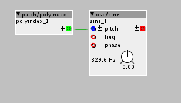

Thanks @thetechnobear
But I am really curious about how much it offsets for example the pitch of an oscillator pr voice. If i just connect the polyindex directly to the pitch inlet of an oscillator in a polyphonic subpatch. Like this:

Each voice is probably offset by something by default. And I was wondering if it was:
Voice 0 = offset 0 pitch
Voice 1 = offset +1 pitch
Voice 2 = offset +2 pitch
etc...
Hmm modulo? what is that?
Maybe I need to give an example:
I have a patch with a sampler in a subpatch, which is polyphonic. It has 3 voices, which mean it plays back the sample 3 times on top of each other. They sound totally identical. Everything inside the subpatch is basically played back 3 times, which just makes the sound a lot louder and nothing more. But when you connect the polyindex to for example the pitch, the lfo speed inside the subpatch(the voice), then those parameters will be offset a little bit for each voice. (as on the picture)....
@thetechnobear If you have got a VIrus synth, then in the edit menu you have also got some parameters for voice feature. Like pitch of oscillator offset pr. voice., lfo speed offset pr voice. Check it out if you got one. You can also use it in context with unisono if I remember correct, where it also just plays the same sound 3 times. Each layer of the unison mode is offset and it is adjustable how much it is offset.